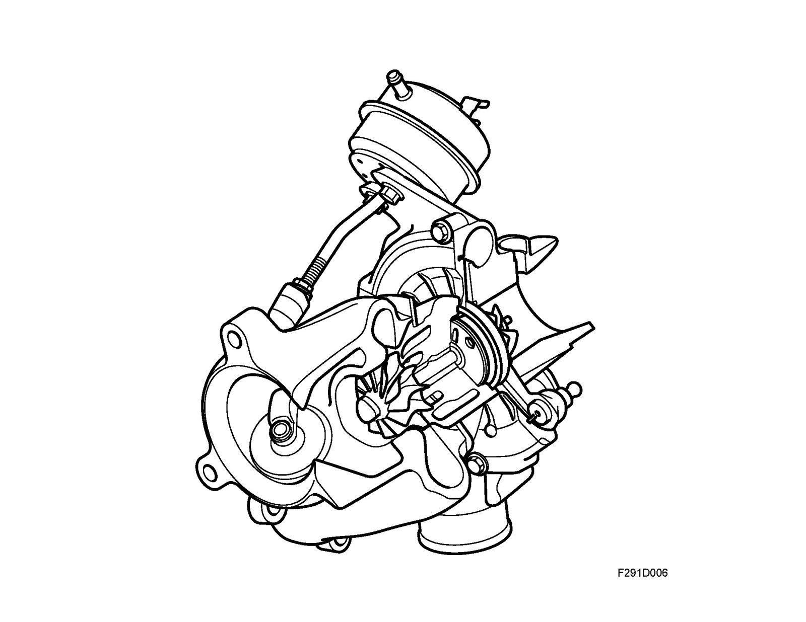

Brief Description
Brief description
Description
General
The turbocharger is distinguished by its low moving mass, which contributes to a short reaction time to throttle application. The turbocharger system is dimensioned to generate a high turbine wheel speed at a relatively low engine speed. Thus, the engine has high torque at normal engine speed and driving conditions. This high torque and the extremely short turbocharger delay make the car smooth and comfortable to drive.
Supercharging
Engine exhaust gases pass a turbine rotor and make it rotated. The turbine rotor is connected directly to a compressor wheel on a shaft, which means that they rotate at the same speed. The compressor wheel increases the pressure in the induction system, allowing more air to enter the engine. Thereby, it is possible to burn more fuel and obtain higher torque and power. The engine control unit governs this process by, for example, releasing excess pressure on the exhaust side when necessary.